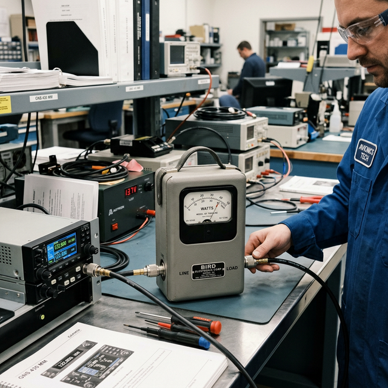

Wattmeter basics
authoring gap
Module Objectives
- Define the function of a wattmeter.
- Explain how a wattmeter connects to a circuit compared to a voltmeter or ammeter.
- Identify common avionics scenarios where an inline RF wattmeter is mandatory.
Why Does This Matter?

A pilot complains their VHF communication radio sounds weak and has very short range. The radio receives fine, and it powers on. To determine if the transmitter amplifier is actually pushing energy out to the antenna, you cannot use a standard multimeter. You need to measure the actual Radio Frequency (RF) power output. Inserting an inline RF wattmeter between the radio and the antenna gives you the definitive answer instantly.
What You Need To Know
What a Wattmeter Measures
A wattmeter is an instrument designed to directly measure electrical power (the rate of energy transfer) in watts (W).
While you can mathematically calculate DC power using Ohm's Law (P = V × I) by taking separate voltage and current measurements, a wattmeter performs this multiplication internally and displays the true power instantly on a single dial or screen.
How a Wattmeter Connects (Internal Architecture)
Because power requires both voltage and current, a legacy electro-mechanical wattmeter requires two simultaneous connections to the circuit:
- 1. Voltage sensing coil — Wired in parallel across the load (exactly like a standard voltmeter).
- 2. Current sensing coil — Wired in series with the load (exactly like a standard ammeter).
The magnetic interaction between these two internal coils physically drives the needle to display total Watts. (Modern digital wattmeters use solid-state sensors to do the same thing).
Avionics Application: The RF Wattmeter
In avionics, the most common daily use of wattmeter technology is the Inline RF Wattmeter (often colloquially referred to as a "Bird meter," after the famous manufacturer).
- It is physically inserted inline (in series) into the coaxial cable connecting a transmitting radio to its antenna.
- When the pilot keys the microphone (transmits), the meter reads the exact RF wattage the amplifier is producing (e.g., 16 Watts for a VHF Comm radio).
- It also measures Reflected Power — energy that bounces back from a broken or untuned antenna, helping the technician instantly diagnose a bad antenna installation.
AC Power: True Power vs. Apparent Power
In heavy AC alternating current circuits (inverters, large motors), a wattmeter reads True Power (actual usable watts consumed). This is vital, because due to phase shifts in AC motors (reactance), simply multiplying Volt-Amps with a DMM gives you "Apparent Power", which is artificially higher. A true RMS wattmeter does the complex math to show you what the system is *actually* consuming.
System Visualization
graph LR
A[VHF Comm Radio] -->|Coaxial Cable| B[Inline RF Wattmeter]
B -->|Coaxial Cable| C[Aircraft VHF Antenna]
B -->|Key Mic: Radio Transmits| D[Meter Reads 16 Watts Forward Power]
D --> E[Transmitter output verified good]
B -.->|Meter Reads High Reflected Power| F[Antenna or Coax is broken/shorted]
style E fill:#1e40af,stroke:#1e3a8a,stroke-width:2px,color:#fff
style F fill:#991b1b,stroke:#7f1d1d,stroke-width:2px,color:#fff
On The Job
When diagnosing a weak transmitter, do not guess. Disconnect the antenna coaxial cable at the radio rack, insert an inline RF wattmeter into a dummy load, and key the transmitter. If the meter reads the manufacturer's specified output (usually 10-16 watts for VHF), the radio is fully functional and your problem is definitively out in the aircraft wiring or the antenna structure itself.
Reference Terms
Wattmeter
A test instrument that directly measures the electrical power output or consumption in watts.
Inline RF Wattmeter
A specialized meter inserted into coaxial cables to measure the forward output power and reflected power of radio transmitters.
Reflected Power
RF energy that fails to radiate out of the antenna and bounces back down the cable, indicating an antenna or cable fault.
True Power
The actual usable power consumed in an AC circuit, accounting for phase shifts, read definitively by a wattmeter.
A wattmeter reads true power by simultaneously sensing voltage and current; in avionics, inline RF wattmeters are the absolute standard for verifying radio transmitter health and antenna integrity.